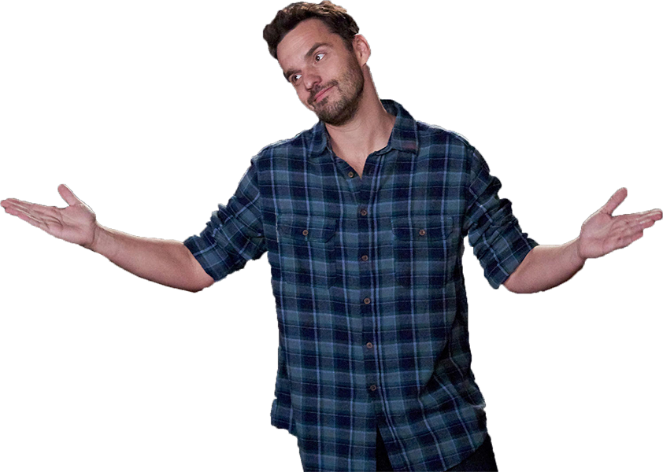
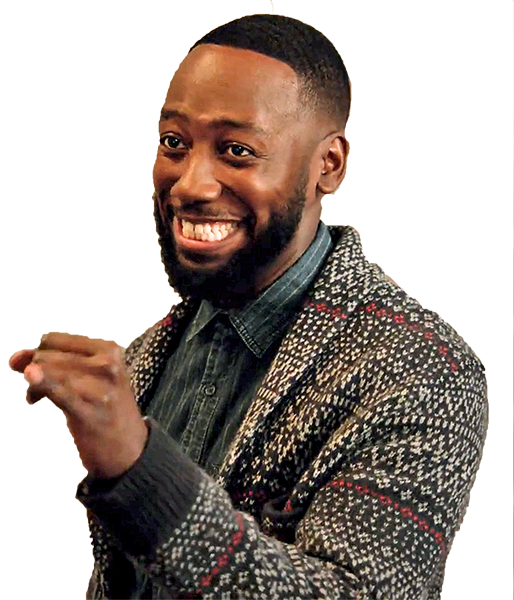

Jess
She is a bubbly young woman trying to find herself again after a shocking breakup with her boyfriend, whom she caught cheating. She has been a teacher since 2006 and she loves to play the handbells. Jess enjoys crafting but doesn’t have much time for it anymore. She also writes Nancy Drew fanfiction. She needed a new place to live due to breaking up with her boyfriend, so she moved in with three men named Nick, Schmidt, and Coach. Her best friend is a model named Cece. Following Coach’s departure, she now lives with Winston instead. When the show begins, Jess is a school teacher in her late 20s. In the pilot, she has an unexpected breakup with her boyfriend who was cheating on her. She moves out of the apartment that they shared, and ends up living in a bachelor pad with Nick, Schmidt, and Winston. Jess brings an over the top girly vibe to the former bachelor pad.

Nick
Nick is an apathetic, socially inept, extremely sarcastic, and hilarious bartender from Chicago who has a keen ability for reading people’s emotions although he can’t seem to express his own. He lives with Jess, Schmidt and Winston. He was dumped by his longtime girlfriend Caroline and made her jealous after pretending that Jess was his girlfriend. He found “rebound” with co-worker Amanda. At first, he did not like Paul but later became a good friend of his. Nick is the most grounded of all the roommates. He is “good” at fixing things and hates spending money. Nick dropped out of law school with three semesters to go, something the roommates often make fun of him for. He once tried to represent Schmidt in court, although this did not go as planned.
Schmidt
Schmidt is one of the roommates in 4D, considers himself ‘top dog’ and runs the loft. He likes to do all of the interior designing (NOT decorating, as he says to Cece “This is a home, not a Christmas cookie,” in Jaipur Aviv), cooking, and cleaning to his standards. He is also very concerned about his appearance; he keeps a binder of photos modeling his own suits and owns a vast collection of hair product. Throughout the show, he makes references to his Jewish heritage. He is a Sagittarius, a fact he brings up every so often when describing certain parts of his personality. Schmidt was extremely overweight in his childhood and throughout college. While he has since lost the weight and gained muscle tone, it is still emotionally scarring for him.
Cece
Cece is an L.A.-based former professional model, now bartender, and also the best friend of Jess Day. She has also become the on-off love interest of Schmidt. She is loving and protective of Jess, but blunt, and gives good dating advice. Her father died when she was twelve, and her relationship with her mother was strained in her teens as both were headstrong. Her parents are of Indian descent, but Cece was born in Portland, Oregon. She enjoys going to clubs and dancing, but she eats healthy and exercises to maintain her appearance. After deciding she was too old to be a model she starting bartending at the bar Nick works at. She also decided to get her GED.

Winston
Being a former roommate who returned shortly after Coach left, Winston finally comes back from playing basketball in Latvia, completely unaware of anything that has happened in the US for the past two years. In Clavado En Un Bar, it is revealed that Winston was the 9th guy on the bench for the 8th best team in Latvia and after being traded to the Kraslava City outdoor league suffered a humiliating leg injury that ended his basketball career.